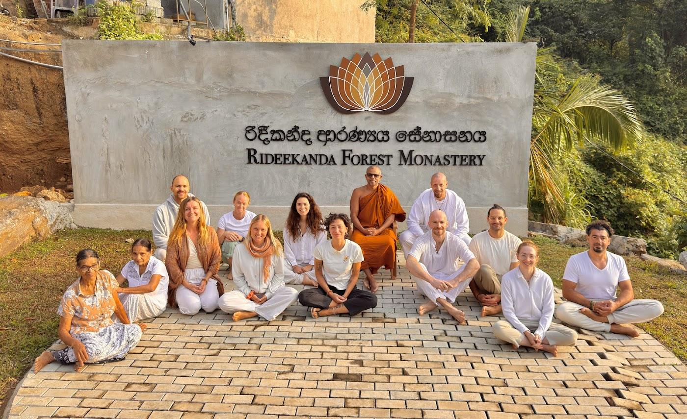
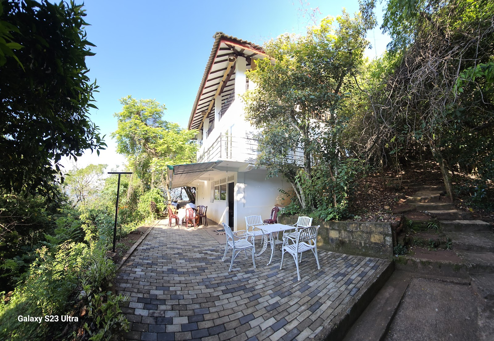
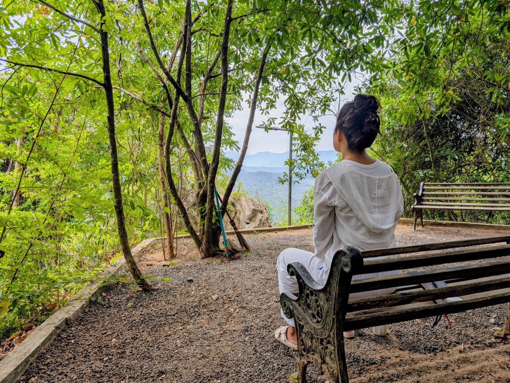
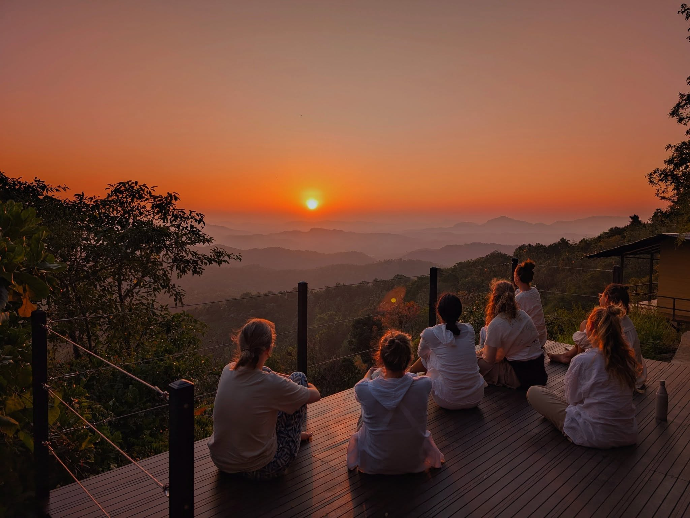

RideekandaForest Monastery
රිදීකන්ද ආරණ්ය සේනාසනය
Buddhist Forest Meditation Monastery · Matale, Sri Lanka
A place for meditation in the stillness of the forest — preserving the true teaching of the Buddha and guiding seekers along the noble path.
The Monastery
A forest refuge for meditation and the Dhamma
Set on a quiet hillside at Udasgiriya in Matale, Rideekanda is a Theravāda forest monastery in the Sri Lankan forest tradition — a sanctuary of silence, simplicity, and sincere practice.
Monastics and lay practitioners come together here for residential retreats, daily meditation, walking meditation, chanting, and Dhamma discussion, surrounded by ancient forest, golden sunsets, and the stillness of the mountains.

Explore
Find your way around Rideekanda
Everything from the monastery and residential retreats to projects, the gallery, and the latest news.

The Monastery
About the monastery, its teachers, and the forest tradition it keeps.
Enter →
Retreat Program
Residential meditation retreats — concentration and Vipassana in the forest.
Enter →
Book Your Stay
Reserve a place for an upcoming retreat.
Book →
Gallery
Scenes of the hillside, shrine, and daily life.
View →
News & Events
Happenings, observances, and announcements.
Read →
Video Gallery
Dhamma talks and films — watch on-site.
Watch →
Projects
Ongoing building & design initiatives.
Explore →
Dāna · Donation
Support the monastery and its offerings.
Give →
Reviews
Experiences shared by visiting practitioners.
Read →
Contact
Reach us by phone, email, or WhatsApp.
Contact →“Atta hi attano nātho — you are your own refuge.”Dhammapada, Verse 160
Visit
Come and practice with us
Practitioners of all levels — from complete beginners to those deepening an existing practice — are warmly welcome. Reach out to arrange your stay.